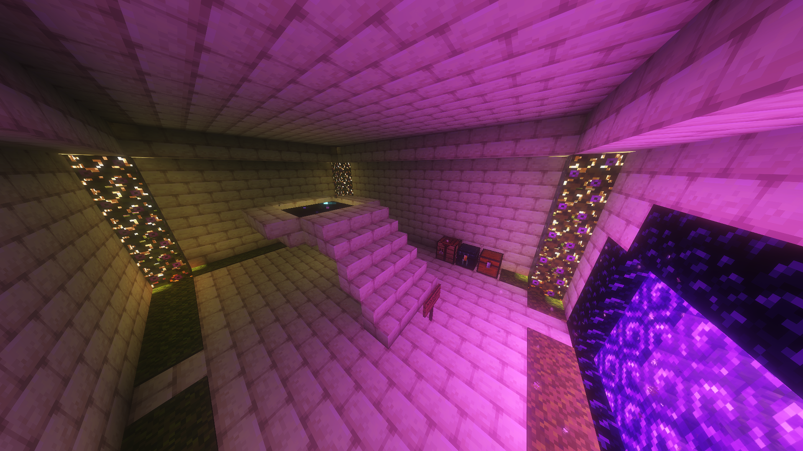
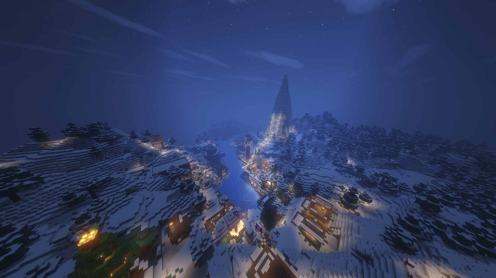
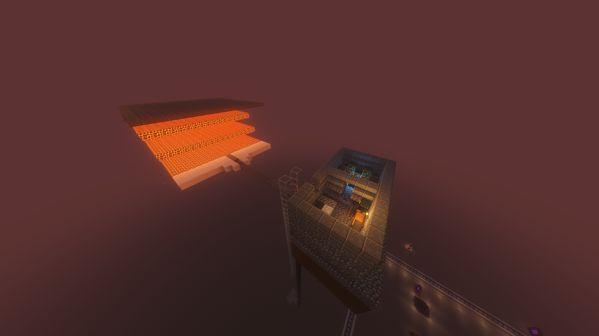
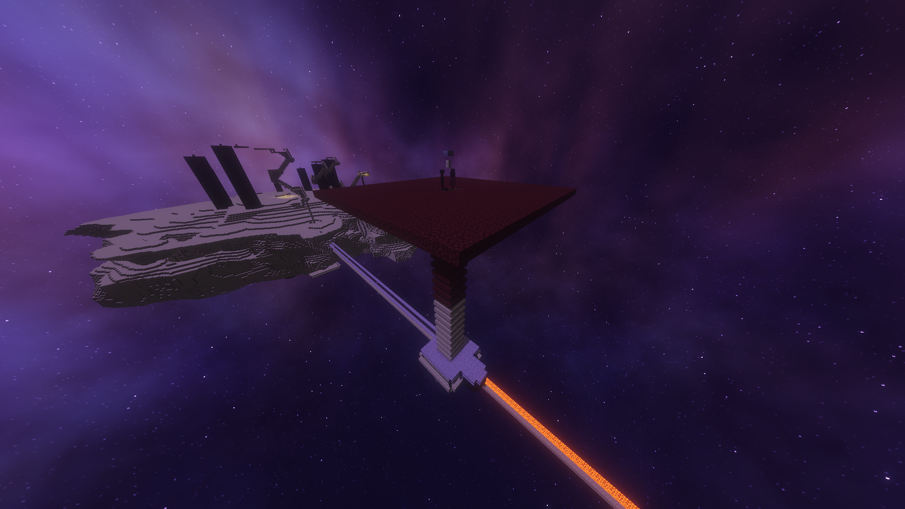
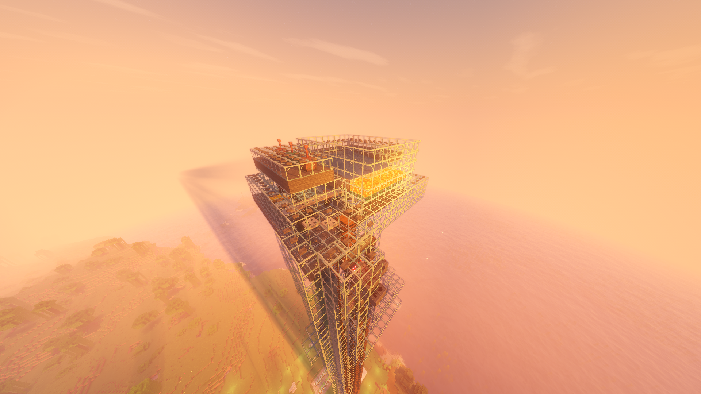
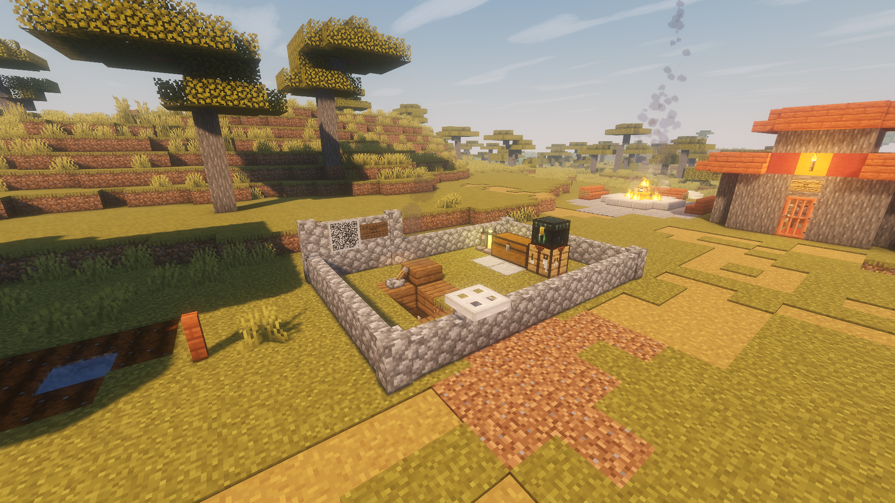
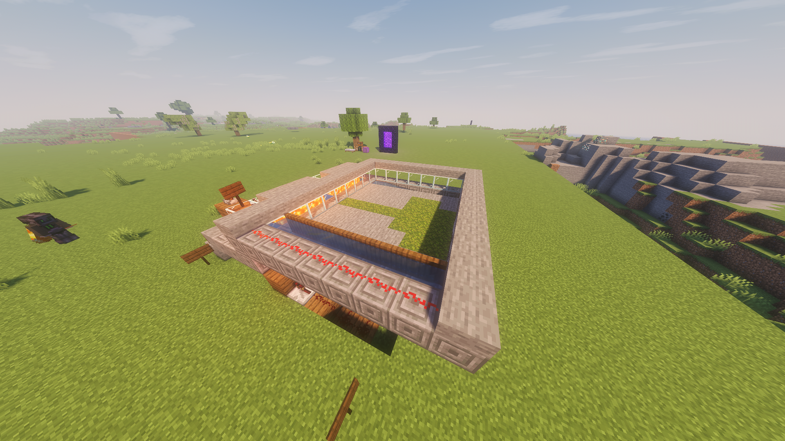

Полезные координаты
-
 Город
ГородСтолица Сакурония
Столица нашего сервера. Здесь происходит весь движ.
Координаты: -4050 -2280
В незере: -510 -290 -
 Интересное место
Интересное местоДеревня Ларыча
Открытая для всех деревня общественного деятеля Ларыча. Через неё проходит каждый новичок. Здесь есть ресурсы для старта, жители для торговли лучшими зачарами и бронёй. Всё в вашем распоряжении, только не путайте с домом Ларыча.
Координаты: -4300 -2240
В незере: -545 -280 -
 Интересное место
Интересное местоОстров с лайнером
(в процессе строительства)
Огромный круизный лайнер с блэкджеком и развлечениями. Здесь есть всё для комфортного отдыха в открытом океане. Любой игрок может занять свободную каюту.Координаты: -6530 -1680
В незере: -830 -210 -
 Город
ГородТерракотовый город
Маленький уютный городок, построенный в мессе, с преобладанием красных цветов и жарким климатом.
Координаты: -6220 -1600
В незере: -765 -200 -
 Город
ГородЛетняя резиденция
Небольшая территория в горной местности с маленькими деревянными домиками.
Координаты: -4750 -3095
В незере: -590 -390 -
Интересное место
Портал в энд
Классический портал в энд.
Координаты: -4535 -760
В незере: -565 -100 -
Город
Зимняя деревня
Большой зимний городок с атмосферными, снежными и новогодними постройками.
Координаты: 2655 -580
В незере: 330 -75 -
Ферма
Ферма золота
Небольшая ферма золота на зомби-пиглинах с автосортировкой ресурсов, наковальней и чародейским столом.
В незере: -540 -220
-
Ферма
Ферма опыта
Самая эффективная ферма опыта на эндерменах.
В энде: 210 0
-
Ферма
Ферма железа
Постоянно рабочая ферма железа, которая уже обеспечила жезелом весь сервер навсегда.
На спавне
-
Ферма
Ферма слизи
Маленькая ферма слизи, построенная на механике зелья слизистости.
Координаты: -240 1120
В незере: -30 140 -
 Ферма
ФермаМобо-ферма пауков и криперов
Весьма эффективная мобо-ферма, где можно накопить пороха и нитки.
Координаты: -3860 -1950
-
Ферма
Ферма мха
Ферма мха, которая позволяет получить не только блоки мха, но и моховые коврики, азалию и цветущую азалию.
Координаты: -3290 -2370
В незере: -420 -300